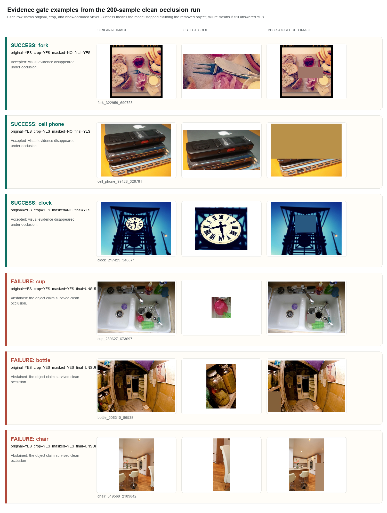
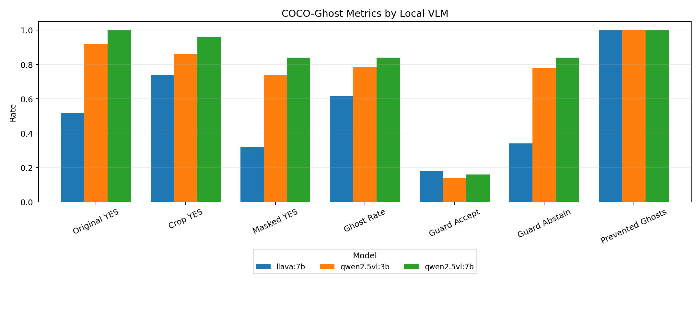
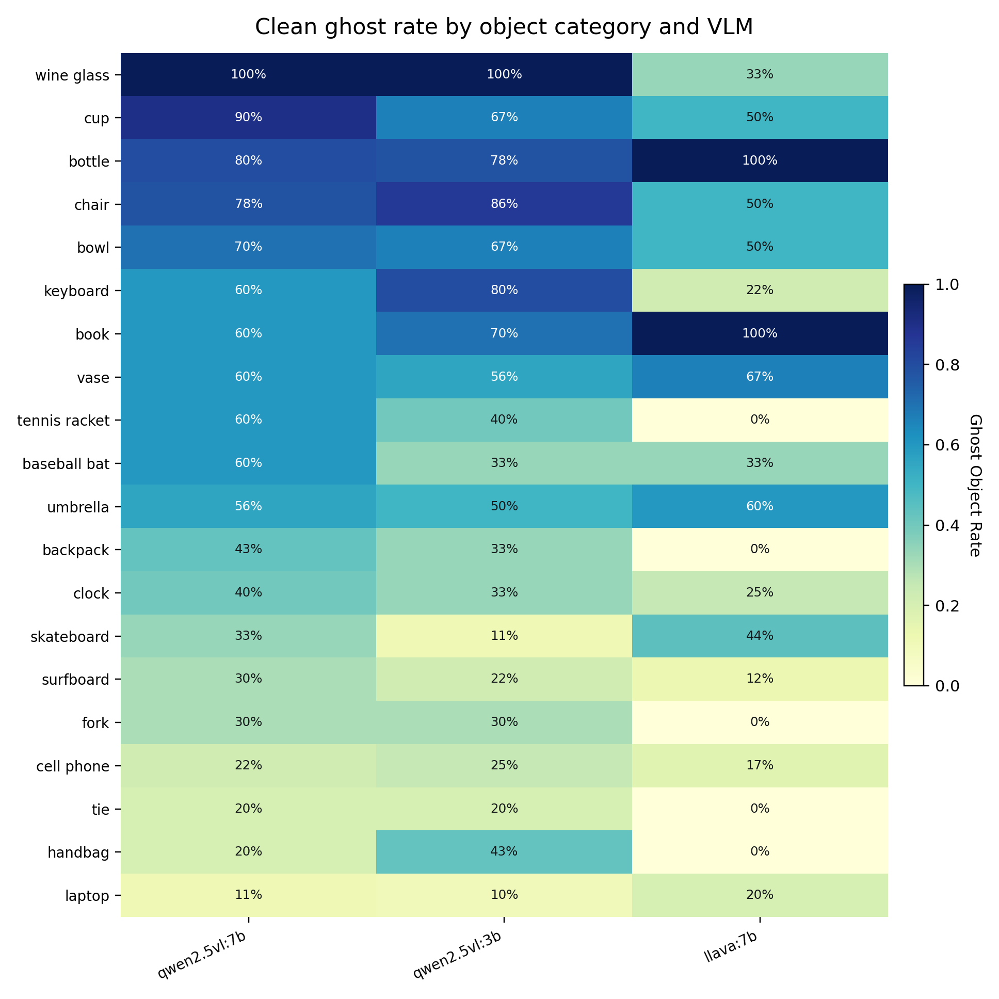
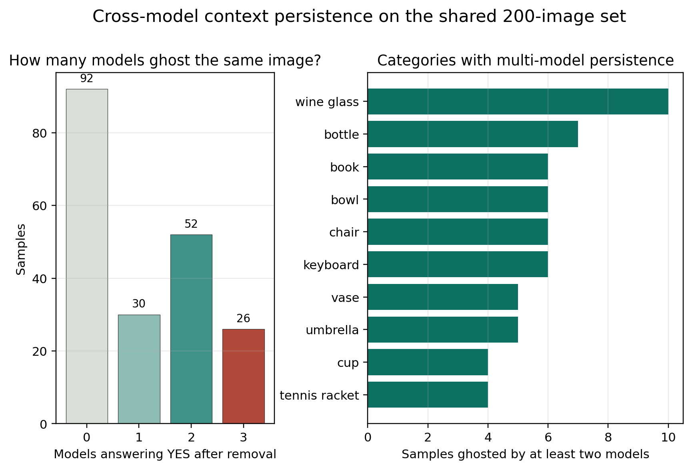
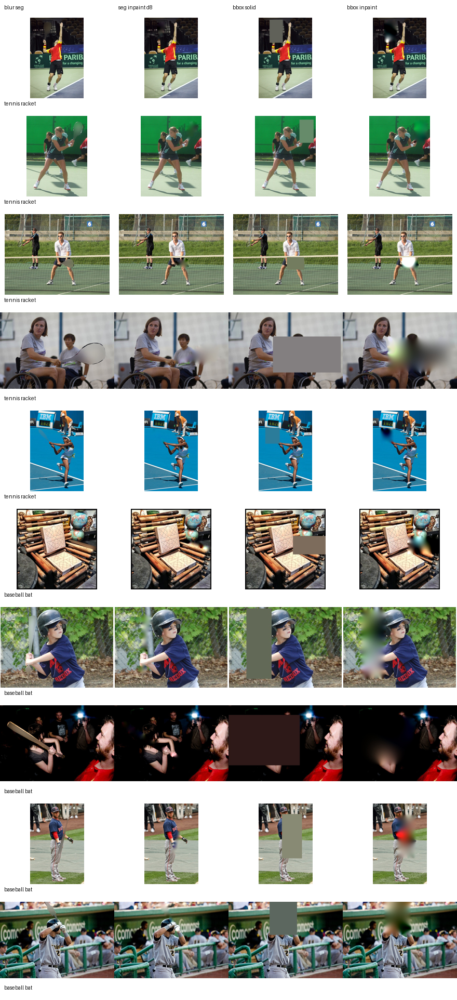

COCO validation instances
labeled clean-removal
Qwen2.5-VL 7B clean ghost rate
detected ghost claims accepted
COCO-Ghost turns COCO objects into controlled occlusion counterfactuals. GHOST-Guard then asks a simple deployment question: should we trust an object claim if it survives removal of the visual evidence?
COCO validation instances
labeled clean-removal
Qwen2.5-VL 7B clean ghost rate
detected ghost claims accepted
We abandoned blur masks after seeing that blurred segmentation regions can preserve object shape. The scaled run uses padded bounding-box occlusion with solid local-mean fill. The result is less photorealistic, but much harder to dismiss as silhouette leakage.
Some VLM failures look exactly like strong scene priors: a sink after a cup is removed, a shelf after a bottle is hidden, a court after equipment is occluded. COCO-Ghost makes those priors measurable.
A success means the masked view flips to NO. A failure means the masked view remains YES, so GHOST-Guard abstains.

| Model | Original | Crop | Masked | Ghost | Guard accept |
|---|---|---|---|---|---|
| qwen2.5vl:7b | 96.0% | 94.5% | 49.5% | 51.6% | 44.5% |
| qwen2.5vl:3b | 88.5% | 80.0% | 43.0% | 47.5% | 30.0% |
| llava:7b | 43.0% | 60.5% | 14.5% | 33.7% | 24.5% |
Ghost rate is computed among original-YES cases; LLaVA's lower rate should be read with its lower original recognition.



It does not improve a VLM internally. It asks whether an object claim has local support and whether the claim disappears after target removal. If belief survives removal, the safer application behavior is to abstain, route to a detector, or ask for human review.
Qwen2.5-VL 7B crop-gate ghost accepts
GHOST-Guard ghost accepts
GHOST-Guard abstention rate
Segmentation blur produced higher ghost rates, but sometimes preserved target shape. The project now treats blur as an ablation and uses bbox-solid occlusion for the headline claim.
COCO-Ghost is a counterfactual stress test for object-presence claims, not proof that every masked-image YES is a human-level hallucination.

python3 -m venv .venv
source .venv/bin/activate
pip install -r requirements.txt
ollama pull qwen2.5vl:7b
ollama pull qwen2.5vl:3b
ollama pull llava:7b
bash scripts/run_large_200_model_suite.sh@misc{cocoghost2026,
title = {COCO-Ghost: Auditing Whether VLM Object Claims Survive Object Removal},
author = {Kanagala, Anusha and Panjwani, Dhiral and Aguilera, Stephanie M. and Pudhota, Abhiraj and Powell, Kelly and Murad, Danish and Pillay, Rubin and Jololian, Leon and Bodduluri, Sandeep},
year = {2026},
url = {https://github.com/DIGlabUAB/coco-ghost-guard}
}